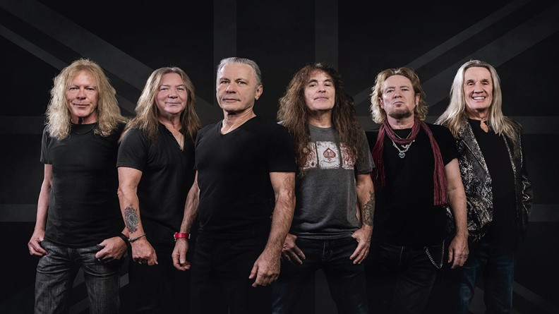

A Banda
Com cinco décadas de existência, dezessete álbuns de estúdio, onze álbuns ao vivo, quatorze vídeos e diversos compactos, a banda veio a ser uma das mais bem sucedidas da história do heavy metal, tendo vendido mais de 100 milhões de álbuns mundialmente, coroados com diversos certificados de ouro e platina. Em 2002, a banda recebeu o prémio Ivor Novello em reconhecimento do sucesso internacional como uma das melhores parcerias de composição da Inglaterra. Durante a tour americana de 2005, foi adicionada à Calçada da Fama do Rock de Hollywood.Em 2011, ganharam um prêmio Grammy na categoria Melhor Performance de Metal com a canção "El Dorado".Foi, também, eleita como melhor banda ao vivo de 2009 pelo Brit Awards.
Pioneiros do movimento musical que ficou conhecido como NWOBHM (Nova Onda do Heavy Metal Britânico), a banda atingiu êxito substancial no início dos anos 1980, acompanhada de uma crescente base de fãs. Mas foi com o disco The Number of the Beast, de 1982, que o Iron Maiden chegou à fama internacional, produzindo uma sequência de álbuns multi-platina que tornaram-se clássicos do gênero. O seu trabalho influenciou diversas bandas de rock e heavy metal e são considerados um dos grupos mais importantes do estilo.

As letras da banda cobrem tópicos como história, literatura, guerra, mitologia, ficção científica, sociedade e religião. Muitas de suas canções são baseadas na história, literatura clássica e cinema. Eddie the Head é o mascote da banda, aparecendo em quase todos os álbuns e capas de singles, vídeos e mercadorias. Originalmente projetado por Derek Riggs, Eddie se tornou a principal atração dos shows ao vivo do Iron Maiden, que apresentam elementos teatrais de acordo com a história de cada canção ou turnê, como cenários coloridos, infláveis, pirotécnicos, equipamentos de iluminação e adereços.
A banda foi formada no dia de Natal de 1975, logo após o baixista Steve Harris deixar o seu antigo grupo, Smiler. Depois de ter suas composições rejeitadas por várias bandas nas quais participava, por considerá-las difíceis e complicadas demais, Steve Harris decidiu criar sua própria banda. Harris atribuiu o nome "Iron Maiden" inspirado no instrumento de tortura de mesmo nome.[12]